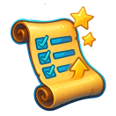

TaskTamer
Turn your to-do list into a game and your goals into victories with our engaging and interactive platform.
Turn your to-do list into a game and your goals into victories with our engaging and interactive platform.
TaskTamer was born during a gap year by Merlyn Omagwa, a 17-year-old student who was tired of boring planners and procrastination. Inspired by how games keep us hooked with points, rewards, and goals, she teamed up with friends to create a new kind of productivity app—one that feels more like play than pressure.
TaskTamer helps students stay organized and motivated by turning everyday tasks into quests, challenges, and XP-earning adventures. From AI-powered smart scheduling to friendly competition, we make productivity feel less like a chore and more like a win.
Everything you need to turn tasks into triumphs.
Turn your daily to-dos into quests you can conquer.
AI analyzes progress to adapt difficulty.
Tasks stay challenging yet manageable, keeping you engaged without overwhelm.
Compete with friends in real-time task battles.

Live scoring and ranking
Adds social motivation and encourages friendly rivalry to boost productivity.
Get personalized scheduling help from your AI buddy.

AI analyzes habits, deadlines & time slots
Recommends the best times for tasks and nudges you with smart reminders.
Build healthy habits that last by completing tasks.

Visual streak badges and motivational reminders
Encourages consistency and healthy routines through gamified habit tracking.